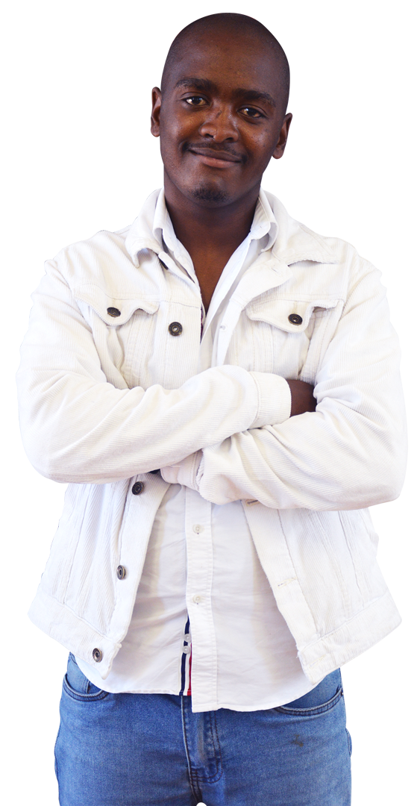

Complete the form below and we will be in touch shortly.
Digital Solutions developed by youth
Press
space
to change our flavour
We are
A unique development agency.
We pride ourselves in delivering high quality tech solutions at
below market costs, while positively transforming South Africa.
How we do this
We are a social enterprise owned by a not-for-profit organisation.
Our team is made of a handful of senior developers and experienced
freelancers working with and mentoring youth. While working in the
agency, youth gain real experience, diversify their skills set and
prepare for industry. We pride ourselves for assisting
institutions in their digital conquest whilst placing youth in
meaningful employment.
Level 1 BEE
Services
Web Design and Development
At LC Studio we design and develop web solutions that capture
your target audience’s attention.
Web Application Development
LC Studio team are able to convert complex process into
simplified solutions that cater for your business needs. Our
full stack approach offers you a one stop shop.
Minimum Viable Product
LC Studio specializes in web based MVP’s allowing you the
opportunity to test the market and validate your product in a
fast and effective manner.
Robotic Process Automation
LC Studio team are able to convert complex process into
simplified solutions that cater for your business needs.
Quality and Assurance Testing
Diversity is key in the workplace, LC Studio offers your
business the opportunity to work with high potential junior
developers that can add an edge to your staffing portfolio.
Hire Our Youth
LC Studio team are able to convert complex process into
simplified solutions that cater for your business needs.
Our Process
Client Brief
Define Scope
Design
Develop
Q&A Testing
Deliver
Our team +
Who's who?
Partners +
Better together
Alumni +
A snapshot
Manager
Ryan Geel
Strategy
Innovation
Patience
Focus
Lead Developer
Jason Wandrag
Wit
Confidence
Sincerity
Patience
Team Lead
Nashville James
Flexibility
Commitment
Positive
Detail-Oriented
Team Lead
Chad Bosch
Innovative
Determined
Dreamer
Mindfulness
Team Lead
Zayaan Stegmann
Creative
Passionate
Caring
Decisive
Team Lead
Lonwabo Mdazuka
Adaptive
Reliable
Visionary
Patience

Better together:
Partners
Alumnus [AKA: Megz]
Megan Meyer
From: Mitchell's Plein
Before
I had just come back from a gap year teaching English
and little direction. After struggling to find a job and
no chance for university, I applied for the Coding
Academy at Life Choices. The rest is history
Now
Front End Developer @ E-Complete
Describe your LC experience in 3 words
Awakening + Life Changing + Opportunity
Alumnus
Megan Meyer
Success Story
“I grew up in Primrose Park, near Manenberg, with my mom
and dad and two siblings, an older and a younger brother.
My mom and dad split up a few years back, I think I was in
GR10 which impacted us as we had to move around a lot. It
was a rough time when my dad left, leaving me to step up
to help my mom around the house and making sure my brother
was doing homework. My mom was doing two jobs at the time
in order to make extra money for us.
I matriculated from Oude Molen in 2010 and pursued a
graphic design career which didn’t work out due to
financial constraints. So, I started working at an
investment company as an administrator. It was quite a
cool job, I enjoyed learning about how the financial
markets worked. Unfortunately, I only held a temp position
for a lady on maternity leave, so on her return, I was
out.
I was not sure what I wanted to do with my life but the
idea to do a TEFL qualification and travel was attractive.
Fortunately, my Mom gave this to me for my 21st, so after
some time, I went to teach in China. That was four years
ago – it was a fresh and valuable time to learn about
different cultures and myself. I was there for eight
months but I couldn’t get my visa renewed so so I had to
return home. During this time my best friend sent me a
link for the Life Choices Coding Academy. But my heart was
set on going back to China, so I didn’t follow the coding
opportunity immediately until my friend basically forced
me to apply.
My application was successful and I was invited to a one
day information boot camp which involved a whole lot of
aptitude tests. Getting through these tests led to a 2
week life skills boot camp – this was another milestone to
overcome before being admitted to the 6 month coding
course.
The 2 weeks bonded the group and set us up with core life
skills:
Financial budgeting was an eye opener for me – it is the
skill I use every day of my life. Before this course I
never budgeted. I used to spend recklessly without a
thought for the future.
Something that really stood out for me during the 2 weeks
was turning walls into doors. We learnt to look at the
full picture of any situation, analyse our options,
consider the impacts of our choices and we were taught how
to use informed awareness to make healthy decisions. We
learnt to break down the obstacle (the wall) and walk
through the door.
Another gift I took from the life skills was learning to
rely on others, no matter what you are going through,
trusting that you can turn to someone. The way we learnt
this was through the Thinking Pair skill. We would be
divided into pairs where we were taught how to listen
mindfully and how to be comfortable talking and being
listened to.
It was a masterful 2 weeks culminating in a 1-1
conversation with the head of the academy where I was told
I had been accepted on the 6 month course. Having not
known what coding was, I immersed myself in the various
languages we were learning – I used to get home and all I
wanted to do was code. It felt like my future was
unfolding and I was excited about what was available to
me.
During the 6 months we attended professional and personal
development courses which offered a holistic way of
growing and healing. It was also compulsory to see a
counsellor during the 6 months. There were things I didn’t
know I was holding onto which I wasn’t aware of - the
counselling helped me confront these things and to become
accepting and whole.
I really enjoyed the professional development which has
helped me to be more effective in the workplace. It gave
me the skills to know how to work powerfully with
different types of people in the workplace. Understanding
emotional intelligence is a skill which has benefitted me
both at work and in life. Simply, EQ is effective whether
you are at shops or facing road rage – being able to step
back and trying to understand what someone else is going
through helps me not to react. I’ve learnt to think before
I act, before I speak. Added to the EQ skills where I did
a Mindfulness course every 2nd Wednesday. It helped me to
know my emotions, feel them and let them pass through
without holding onto them and taking them out on others.
Immediately after my graduation from the Coding Academy I
started my first internship at a company which creates
apps and websites. I was taken on as a junior website
developer. We built websites from scratch using a mock-up
which we had turned into a live website or app.
The workload was pretty intense which caused anxiety at
times. Using the skills I had learnt at the Coding Academy
helped me to function more mindfully and to manage the
anxiety. A coding classmate had joined the company with
me, so he and I used the Thinking Pairs skills and Walls
into doors skills to support one another. I don’t think I
would have been able to handle the internship the way I
did, without my classmate there and without the skills
we’d learnt. Towards the end of my internship my manager
gave an assessment which resulted in me getting a position
straight after my internship. Currently I am managing 4
coding interns from Life Choices so I am growing my
management and leadership skills, which are underpinned by
the life and professional skills I got at the academy. I
am loving watching the interns grow and seeing them
embrace their skills and responsibilities in order to
develop themselves. I feel excited to have been identified
as the senior front end developer with the company
exposing me to management development.
Looking ahead I see my future as focused on my skills
development. I’ve started an investment portfolio and my
goal is to retire at 40. I don’t plan to retire in the
sense of not working, but see myself opening my own
company where I can help people, young and old, to get the
kind of technical and life skills which I have been so
fortunate to gain.
Alumnus [AKA: Monza]
Monwabisi Dingane
From: Philippi
Before
I was at UCT for 3 years but didn’t do very well in my
3rd year, causing me to lose my sponsor. Without the
sponsor, I was unable to go back to university.
Reflecting back I started losing focus in my 2nd year
and disconnecting from my friends. I lost perspective of
my “why”. Perhaps I didn’t even know my “why” in the
first place.
Now
Junior Developer @ Global Kinetic
Describe your LC experience in 3 words
Empowering + Motivational + Passion
Alumnus
Monwabisi Dingane
Success Story
“I grew up in Philippi with a single mom – there were 5
children. The first 3 children, of which I was the 2nd
born, were born to a father we never knew. My mom had 2
more children with my stepdad, who was always ‘Dad’ to me.
When I was in Gr3, my older brother, who was a genius and
a model child who never got into trouble the way I did
growing up, passed due to Asthma. So I became the eldest
child with 4 sisters which I guess is what positioned me
to become responsible in a way. My youngest sister was
sent to live with my stepdad’s parents in Lesotho, so I’ve
grown up not really knowing her – I heard recently that
she had matriculated last year. I feel really sad that I
haven’t known her growing up and I worry because her
grandparents are very old.
Looking back on my life, my Mom has always been a role
model for me. A pillar of strength. She has always made a
plan for the 4 of us in spite of being a domestic worker.
When I turned 21, my uncle told me that my ‘Dad’ was not
my real Dad. I felt confused at the time, but we have
maintained our relationship even though my Mom and my
stepdad separated 5 years ago. I will always be grateful
to my stepdad for his role in my life and I enjoy seeing
him when I do.
During my school years, I was an all-rounder, doing well
academically, especially enjoying technology and science.
I attended a really good science and technology school in
Khayelitsha, matriculating in 2013. During the SA Science
Expo in 2012, we won gold medals for our orange peel
recycling polystyrene experiment. This resulted in us
being invite to go to China for 2 weeks to present the
project at the Beijing Youth Science Competition. That
experience exposed me to a new culture and a wider world
view making me realise that the world is bigger than it
had seemed growing up.
It was during this time that I developed an interest in
computers - I knew that I wanted to do Computer Science so
after matric I enrolled as a Computer Science major at
UCT. My interest was in computers and gaming. I was at UCT
for 3 years but didn’t do very well in my 3rd year,
causing me to lose my sponsor. Without the sponsor, I was
unable to go back to university. Reflecting back I started
losing focus in my 2nd year and disconnecting from my
friends. I lost perspective of my “why”. Perhaps I didn’t
even know my “why” in the first place.
Being out of uni, I spent a lot of time on the internet.
Whilst browsing, I discovered the Life Choices Coding
Academy on Face Book. I saw a link inviting me to register
for the next Coding Cohort. Once Life Choices responded to
my application, a whole new avenue opened up for me. If I
hadn’t come across the Life Choices Coding Academy after
UCT, I would probably still be watching series and eating
junk food. I knew there was a lot more to my life with
many possibilities, but I just couldn’t see a way to tap
into possibility. There were no jobs without a skill set
or qualification. I was disillusioned.
Part of the Coding course requirement was that we had to
attend Professional Development Sessions which included
self-awareness and mindfulness classes. We got to look at
our habits, our way of thinking, our attitudes as well as
the things that got us excited in life. This helped me to
reconnect to my “why” and I started to see clearly where
my path could lead.
Because I wasn’t earning money whilst doing the Coding
Course, I was reliant on my Mom which was stressing me
out. I didn’t have a laptop at home so I was dependant on
the Academy resources. It meant starting my day early to
get to a computer at the Academy to ensure my coding work
was done to the level I had set for myself. Because of my
stress I was getting bad headaches. Fortunately during the
6 month coding course, we get to have 1-1 coaching
sessions. The coaches were a critical part to me accepting
what I had control over and what I had no control over. It
helped me to focus on the things I could work on, and let
go of the things I couldn’t influence. Once I started
isolating what I could control, my stress levels became
more manageable and my relationship with tutors and peers
started improving. Looking back I think I would have
probably dropped out of the Coding Academy like I did at
UCT, had I not been exposed to self-development and
coaching support, which offered a holistic approach. Those
life skills empowered me and I still use meditation,
breathe work and mindfulness to check in with myself.
One of the Professional Development courses we went
through was focused on how to interact with others and how
to show up professionally. Emotional Intelligence was a
critical learning for us and has continued to help me
introspect. We were also taken through interviewing
skills, having to role play an interview on camera. It was
a very valuable experience to be able to see myself in an
“interview” and to have knowledge about how I can make or
break an interview and it has given me a confidence.
I graduated from the Coding Academy end 2019 and am
working closely with the placements officers at Life
Choices to find an internship, which is part of the
fulfilment of completing my Coding Certificate. Whilst I
am looking for an internship, I am free lancing on a
project which is keeping my skills honed and helping me to
help my family.
The unemployment rate and financial restraints on so many
youth in South Africa today is a huge obstacle to finding
a meaningful future and financial independence. I am
grateful for having had the opportunity I had at the
Coding Academy and how it has offered me a holistic
approach to myself and my future. I have a dream to start
a similar organisation to help other youngsters in South
Africa in order to be part of building our country.
I turn 25 on the 13th March. When I look back on my entire
life, I realise how important it is to do what you love.
So to all the youngsters in South Africa, I encourage you
to direct your passion into what you love. If you love
music, follow that passion. Be you and be good at it.”
Alumnus [AKA: Spess]
Speciose Kamanzi
From: Retreat
Before
Towards the end of high school, I’d considered studying
either nursing or business admin, but I couldn’t get
into university or college because my math results
weren’t good enough, and I couldn’t get funding. After I
matriculated I found it difficult to get work. It was a
dark time for me. I couldn’t provide for myself, I
didn’t have anyone to lean on and I couldn’t see a way
forward. There seemed to be no hope.
Now
Junior CRM Developer @ Digi Outsource
Describe your LC experience in 3 words
Reboot + Life Changing + Hope
Alumnus
Speciose Kamanzi
Success Story
“Towards the end of high school, I’d considered studying
either nursing or business admin, but I couldn’t get into
university or college because my math results weren’t good
enough, and I couldn’t get funding. After I matriculated I
found it difficult to get work. It was a dark time for me.
I couldn’t provide for myself, I didn’t have anyone to
lean on and I couldn’t see a way forward. There seemed to
be no hope.
Eventually I got a job as a waitress at the Spur. I had
been working there for about 18 months when one day my old
GR6 teacher came into the Spur. She gave me a Life Choices
Coding Academy pamphlet. When I got home I did some
research about whether this was something I might want to
do. Because coding is a 21st century skill which doesn’t
limit your work outputs and which encourages innovation I
decided that this was a valuable opportunity so I applied
for the Coding Course at Life Choices and did the online
test at an internet café before going to my waitressing
job. The test was a bit hectic and I was nervous but I
tried my best.
I saw the coding course as a way out of my situation and a
way for me to start building a career path. I felt excited
and I really wanted to do this, so when Candice called me
after I’d done the test, to ask me for my email address, I
started feeling hopeful. When I got the email advising
that I had been accepted to do the Coding Academy 2 week
Life Skills course, I was super relieved and excited and
so emotional. But I remember also feeling anxious because
I had set my hopes on this opportunity, and on the first
day we were told that doing the 2 week course didn’t
automatically qualify us to be accepted onto the course.
During the 2 week I got to view ‘my’ life differently.
When we worked with ‘tackling our inner giants’ I got to
see the things that held me back in my life. I got to
realise that my internal thoughts caused self-doubt which
often had me give up and brought me down. Through the life
skills course I realised that I am capable of more and
I’ve learnt to look at what I’ve achieved rather than what
I haven’t achieved. Now, when I am facing a negative
thought I remember how far I’ve come and I reset my
thinking. At the end of the 2 weeks an announcement was
made advising who was going to enter the coding course – I
had made it! Once again I felt relieved and excited.
During the 6 month Coding course, we were exposed to
various Professional Development training sessions.
Aspects that stood out for me were learning about
presentation skills and how to show up at an interview –
we had to practise mock interviews in front of a camera
which gave valuable insight and opportunity to show up
differently. We had training on grooming for an interview
- how to dress and how to be confident enough to ask
questions of the interviewer. We were assessed on how we
used the skills and were given additional support to
improve ourselves.
One of the sessions focused on Emotional Intelligence
where we learnt about the different personality types and
how people respond differently to me. I learnt to accept
others as they are, trying to see their lives from their
perspective. This has been invaluable in the workplace
because working in a diverse team, I am able to accept and
embrace the differences.
During our Mindfulness training, learning to be mindful
and in the present moment, has helped me to manage my
stress and reboot my emotions in hectic situations (for
example at an interview) and when life feels overwhelming.
It’s a life skill I have continued to use and which I’ve
integrated into my self-management.
Towards the end of the 6 month coding training, we were
trained in public speaking and how to respond positively
in an interview. When I went for the interview for my
internship I felt confident and prepared to face a
professional interview. I learned that it is ok to ask
questions about the company and the internship and I
realised that an interview is a two-way conversation.
I felt my internship interview went well and I was
‘over-the-moon’ when I heard that I had been accepted as
an intern. Twelve of us were accepted from the Coding
Academy. We got put into different teams - this was the
start of my career! This was my chance to learn and grow
and shine.
I was integrated into the company and showed the systems
which made it an easy adjustment into my first job even
though my days were long. I had to get up at 04h00 to get
to work on time and only got home at 19h00. Everything was
new and the work load initially was overwhelming but
having my teammates support made it easier and using
mindfulness helped me keep perspective. Another skill I
have used is time management, which definitely helped to
get me through the early days of the internship.
Practising the Thinking Pairs technique, which we’d learnt
during the coding course was my way of adjusting to
working and the challenges I was facing. Having learnt
that I have a right to be heard, has enabled me to reach
out when I am struggling with someone. And having someone
hold a place of listening to me helps me to process my
thoughts and to often find solutions.
At the end of my 6 month internship, we were told that
they wouldn’t be placing any of the interns in full time
positions. In the meantime my boss had written a
motivation to keep me at the company. I wasn’t aware of
this at the time, so I started looking for other work.
Fortunately there was a junior position opening in the
company which my boss encouraged me to apply for. I was
successful and was appointed as a junior CRM developer.
That was a highlight moment for me and added to the
confidence I was developing.
My new role is giving me real responsibility for managing
my own tasks and assignments whilst adding value as much
as I can whilst I am being trained into Customer Relations
Management Development. Looking ahead, I plan to become
more skilled in technology as I focus on becoming a senior
developer. I feel like I have found a career which a
couple of years ago I knew nothing about. Being a 21st
century skill there are so many opportunities for me and
my future is exciting.
I am really grateful to Life Choices and the Coding
Academy for the opportunity I’ve had and for the constant
encouragement and life skills I was exposed to. My aim is
to encourage youth from similar backgrounds to mine, to
help them believe in themselves and to dream into their
futures.”
Alumnus [AKA: Ev]
Evan Christians
From: Lotus River
Before
Once I’d completed 1st year I made a choice to give up
my studies. I felt as though everything I had worked for
had been in vain and that I had thrown away an
opportunity. The initial impact of this was that I was
left feeling depressed, wondering if I was just going to
be another unemployed statistic in the Cape Flats
Now
Junior Full Stack Developer @ Lima Bean
Describe your LC experience in 3 words
Diverse + Powerful + Impactful
Alumnus
Evan Christians
Success Story
“Most of my life was spent growing up in Lotus River. It’s
a troubled community with lots of challenges, most
specifically crime and drugs which are big problems there.
Like many poor neighbourhoods, we had a lot to deal with.
Loads of kids don’t finish school so unemployment is high
which results in a big gangster culture and intensifies
the crime levels. This creates a dark underlying
community. I feel fortunate that the area I grew up in was
tight-knit with people looking out for each other,
neighbourhood support and generally children felt
protected. However the ‘dark side’ inspired me to aim high
in my life.
Fortunately when I was ready to go to high school, my Mom
had a good job and was able to send me to a school in a
more affluent area. I felt more privileged than my friends
from Lotus River. It motivated me to work hard and to use
the opportunity to its fullest to ensure I made something
of myself. My first high school in the “leafy suburbs” was
largely attended by coloured learners, so it wasn’t a
problem adjusting to this affluent school.
But when I moved to Camps Bay High ??? I became aware of
the cultural diversity and the socio-economic divide in
South Africa. At the beginning I was treated differently
because of my race. I wasn’t used to racism, having grown
up in post-Apartheid South Africa and in predominantly
coloured schools where I was the ‘norm’. At first it was
tough but then I found the humour in that the ‘others’
were curious about me, and we started to bond. I felt
proud to attend this school. I wanted to show that I was
grateful for this opportunity which motivated me to work
hard and excel in matric.
In my last 2 years of high school I realised I had a real
aptitude for math and science and I wanted to dive deeper
into the science of mathematics. This drew me to apply to
study Actuarial Science at UCT. I started 1st year on this
course but pretty soon I felt I hadn’t made the right
choice – I found it a bleak field of study. Once I’d
completed 1st year I made a choice to give up my studies.
With this realisation, I felt compromised because my
studies had cost my parents a lot of money. I felt as
though everything I had worked for had been in vain and
that I had thrown away an opportunity. The initial impact
of this was that I was left feeling depressed, wondering
if I was just going to be another unemployed statistic in
the Cape Flats, possibly raising a child without a
qualification and without hope. I didn’t want to add to
the problems and challenges in South Africa. It was a
bleak time for me.
Sometime during my apathy and depression, I applied to do
a course at the Life Choices Coding Academy. It honestly
was a scary time for me. I didn’t want to make another
mistake but I didn’t have many choices. Neither did I have
any motivation or direction. It was a pretty horrible time
for me as I didn’t want to be at home and be a burden on
my family.
I was accepted to do the Coding Course and remember that
my depression took away my desire to engage with the other
learners as I had a fear of drawing people into my dark,
painful space and I didn’t want to hurt anyone who I might
get close to. Fortunately for me the curriculum included
professional and personal development which forced me out
of my comfort zone.
Looking back I can see that when I joined the Coding
Academy I must have shown up as pretty arrogant knowing
that I had had better opportunities in high school than
most of the peers in my coding class. Getting to know my
peers and working on projects together was very humbling
for me. It got me to appreciate differences and diversity
and value opinions from others.
Self-development has always been very important to me so
being integrated into the different cultures on the coding
course, helped to feel like I belonged rather than
following a growth journey of isolation.
One of the life skills we had to participate in during the
coding courses was “Thinking Pairs.” I felt like I was
crossing my own boundaries during this time and I could
feel that I was breaking out of my shell by being heard
and having to express myself in a safe space. I got to
realise that I have given myself too little credit in the
past for what I’ve achieved. Being heard in thinking pairs
started to give me a sense of my value and worth. I’ve
become open to speaking to others, and to listening out
for other people’s stories. This has been valuable during
my internship as it has translated into being able to open
discussions and hear from my colleagues about their
challenges and ideas on projects.
The personal development has you look inward. I got to
realise that as stubborn as I could see I had been in
aspects of my life I was able to reflect and learn that
external factors play a huge role in moulding who you are.
Being exposed to the various life skills at the Academy
got me to expand my worldview and my limited thinking.
What was impactful to me during the coding course was that
we were expected to perform in many different scenarios
like working alone, working in a team, creating a product
in a team. A task we were given to achieve was to work in
a Design Thinking team to create a product which we had to
design, produce and showcase to our class. Our team
designed and produced a prototype virtual learning centre
which had lots of interactive opportunities like
animation, podcasts etc. Our objective was to make it
accessible to various learning styles. This process
enforced a collective thinking space where we could draw
on the life skills we had learnt so far. Having to present
our design with my team, to our peers, gave us a sense of
achievement, whilst we were also inspired by what the
other coders had created.
Whilst on the 6 month coding course we were offered
counselling which is where I identified a sense of
arrogance and where I learnt to be more accepting of
others rather than being judgemental. It helped me to not
be afraid of what I don’t know. I got to unlearn what I
thought was right and to open my world view.
Having gone to a privileged high school, I was used to
talking in front of the class or the school. These skills
were expanded on during the presentation skills training
we had on the course. I learnt to focus on engaging with
the audience whilst being less aware of myself in the
process. It was less about me, and more about my audience.
These skills helped me focus on the interviewer during my
first internship interview, and encouraged me to have a
2-way interview where I could also ask questions. It gave
me the confidence to be myself during my interview which I
believe played a big role in me landing my internship.
Part of graduating from the Coding Academy is to be placed
in a 6 month internship. Within the first 3 months, the
feedback from my manager was how pleased she was in how I
had integrated into the team and that they could see the
value I was bringing to the business. They wanted me on
board and wanted to develop me as a programmer resulting
in me being offered a full time position as a junior web
developer.
Something that was very valuable during my integration
into the company was applying the “learning how to learn”
skill we had done during the coding course. It taught us
the importance of taking breaks to ensure productivity. It
also taught us how to be open to ask for help instead of
isolating ourselves when we are feeling unsure of how to
do something, which can become counterproductive. I got to
accept that I am not a burden because I ask questions.
Conversely asking questions helped to develop and
integrate me into the team. Knowing that I was part of a
working team has helped me develop myself and has taught
me that it is valuable for the team to ask questions
ensuring there are more upskilled people on the team which
improves productivity.
I’ve recently been contemplating what my next career step
is and how to grow from what I’ve already learnt. I have a
yearning to travel internationally and earn dual
citizenship whilst also exposing myself to cutting edge
technology. A thought that I am keeping in mind is to one
day consult or own my own company but for the foreseeable
future I want to travel and gain as much exposure and
experience as I can.
On another level, I want to encourage South African youth
in poorer areas to be humble and be prepared to start
somewhere, even if it isn’t what they feel they deserve.
We all have a beginning point. It’s from this place that
we grow and educate ourselves. Being in a lesser position
is not dishonourable but not moving out of that position
because you feel the world owes you, or that you are
entitled, is the very attitude which will hold you back.
Take responsibility for your own story. Make it happen.
I am grateful for the work Life Choices is doing in the
communities – they are a powerful organisation. The
programmes are impactful and has been a life changing
experience for me, opening up my future. My coding journey
has had a massive impact on my life.
Our Team
Partners
Alumni
Probono work
Are you
an NPO, small business or government?
Are you in need of a
digital push?
We have committed to dedicate a percentage of our work to help other
institutions to succeed at no cost.
Talk to us!